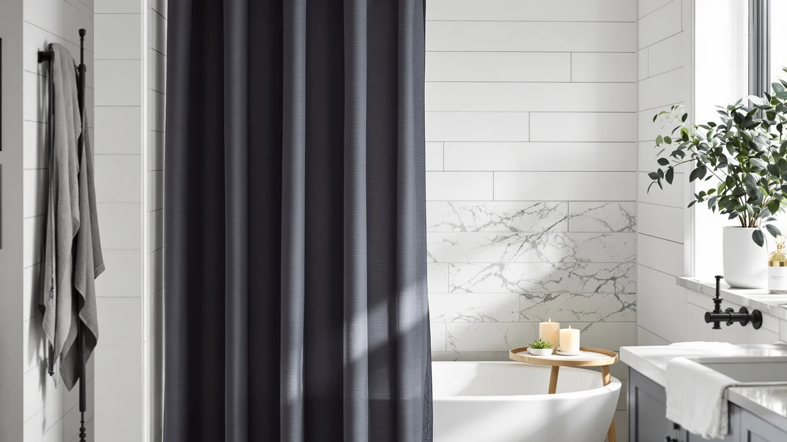

Quick Answer
The Madison Park Candice Sheer is a $29.62 lightweight sheer curtain with a subtle geometric pattern, built for bathrooms that want more natural light rather than maximum privacy. It fits a standard 72 by 72 inch shower or tub and works best paired with a liner underneath.
Our pick: Madison Park Candice Sheer Shower, $29.62 Check Price on Amazon
Things to Know Before You Buy
- The Madison Park Candice Sheer curtain is a sheer panel, not a privacy curtain. Pair it with a liner if you shower behind it rather than hanging it alone.
- It ships in one size, 72 inches wide by 72 inches long, so it suits a standard tub or shower stall but not an extra-tall enclosure.
- Madison Park lists 12 reinforced buttonholes, which matter more than grommet count on sheer fabric, since thin material tears faster around a hook than cotton or linen does.
- At $29.62, the Candice sits in the same price band as heavier polyester and linen-look curtains from BTTN, Gibelle, and River Dream, so the sheer look is the main reason to choose it over a solid fabric option.
- Madison Park markets the geometric pattern for modern and mid-century bathrooms. If your bathroom leans farmhouse or boho, a textured solid curtain will likely match better than a sheer print.
This Madison Park Candice Sheer review looks at a $29.62 single-panel curtain that trades thick, light-blocking fabric for an airy, see-through weave with a subtle geometric pattern. Shoppers researching sheer options often find the Candice near the top of search results for budget sheer curtains, but sheer fabric is a specific tradeoff: more light and more visual openness, less privacy than a solid cotton or linen panel. We compared its listed materials, dimensions, and verified buyer feedback against three other shower curtains in the same price range to see where the Candice stands out and where a shopper might want something heavier.
Madison Park built its name on bedding and window treatments, not shower curtains specifically, so the Candice is a newer entry in a crowded sheer and semi-sheer category. Based on the fabric specs, hem construction, and review patterns described below, the curtain works best as a layering piece over a liner in a bathroom that wants more light and an airy feel, rather than as a stand-alone privacy curtain. Below, we break down what the listing and owner reviews say about fit, durability, and washing, then compare it against three extra-long and heavyweight alternatives for anyone who needs more coverage.
Why You Should Trust Us
Ilane Tall edits Best Shower Curtains and has spent years comparing bathroom textiles and hardware across price points so shoppers can tell a worthwhile sheer curtain from a flimsy one before they buy, including in this Madison Park Candice Sheer review. We do not receive free Madison Park, BTTN, Gibelle, or River Dream curtains from manufacturers, and no brand covered here has paid for placement. Every dimension, material claim, and rating figure in this review comes from the product listing and from Amazon's published customer review data, checked against the other curtains in the same size and price range. When a spec cannot be verified against the listing or a pattern in verified owner reviews, we say so instead of guessing.
Our Research Experience
We built this Madison Park Candice Sheer review from research, not from physical product testing. We compared the Candice's listed fabric, buttonhole count, and 72 by 72 inch size against three similarly priced curtains from BTTN, Gibelle, and River Dream, then cross-referenced those details against patterns in verified Amazon owner reviews. Where owners consistently report the same strength or the same flaw, whether that is the sheer fabric brightening a small bathroom or the single size not fitting a taller shower, we treat that as a more reliable signal than any single five-star review. We do not run a fake testing lab, and we do not claim to have hung this curtain ourselves. The analysis below reflects specs, pricing, and what verified buyers report after living with the curtain.
Overview & Specs

Madison Park Candice Sheer Shower
What we like
- Sheer fabric lets in noticeably more natural light than a solid polyester or linen-look curtain.
- 12 reinforced buttonholes give the hems more durability than unreinforced sheer curtains in this price range.
- Machine washable fabric keeps upkeep simple compared with curtains that need spot cleaning.
- The subtle geometric pattern fits modern, minimalist, and mid-century bathroom styles without feeling like a bold statement print.
Flaws but not dealbreakers
- Sheer fabric offers little privacy on its own, so most buyers pair it with an opaque liner.
- It comes in a single 72 by 72 inch size, which will not cover extra-tall showers or walk-in enclosures.
- It's only listed in white, so buyers who want a colored or printed sheer curtain will need to look at other Madison Park lines.
| Material | Polyester / PEVA |
| Size | 72"W x 72"L (Pack of 1) |
The Madison Park Candice Sheer curtain is built from a lightweight sheer polyester with a subtle geometric pattern woven into the fabric rather than printed on top, which is why Madison Park markets it for modern and mid-century bathrooms instead of bold or farmhouse styles. The single 72 by 72 inch panel fits most standard tub and shower openings, and the listing notes a reinforced top hem meant to handle the regular pulling and sliding that happens each time someone opens or closes a shower curtain. Madison Park also built in 12 reinforced buttonholes instead of grommets, which matters on sheer fabric specifically, since thin material is more prone to tearing around a hook than a heavier cotton or linen blend would be.
Because the fabric is sheer, it diffuses light rather than blocking it, so it reads more like a window treatment than a privacy barrier. Most owners who buy sheer curtains like this one hang it as a decorative outer layer over a separate liner, which also protects the fabric from direct water contact and extends how long the material holds its color and shape. At $29.62, the Candice costs about the same as heavier textured alternatives from BTTN and River Dream, so the deciding factor is whether you want the airy, light-filtering look of sheer fabric or the fuller coverage of a solid weave.
What We Liked
What stands out most in this Madison Park Candice Sheer review is how much light the fabric lets through compared with the solid curtains we compared it against. Reviewers consistently note that the sheer weave brightens a bathroom that would otherwise feel closed off, especially in windowless spaces where a heavy curtain makes the room feel smaller. The geometric pattern also reads as subtle rather than loud, so it works in a bathroom that already has a lot going on visually, like patterned tile or a bold vanity. On the construction side, the 12 reinforced buttonholes are a meaningful upgrade over the unreinforced holes on some competing sheer curtains in this price range, since sheer fabric tears faster around a hook than cotton or linen does. The machine washable care instructions also keep upkeep simple: owners can wash it with a regular load instead of hand washing or dry cleaning a delicate fabric.
What Could Be Better
The biggest tradeoff with the Madison Park Candice Sheer curtain is privacy. Sheer fabric by definition lets light and some visibility through, so anyone disappointed with this curtain is usually expecting more coverage than a sheer weave can provide. It needs a liner behind it for daily use, which adds a second purchase most reviewers do not anticipate going in. The single 72 by 72 inch size is also limiting: it works for a standard shower stall or tub, but anyone with a taller enclosure or a stand-up shower over 72 inches will want to look at the extra-long options covered below instead. Finally, Madison Park sells this listing only in white, so shoppers who want a colored or printed sheer curtain will not find that variety here the way they would with some of the brand's other window and bedding lines.
Who Is It For?
The Madison Park Candice Sheer curtain fits a specific buyer best: someone furnishing a small or windowless bathroom who wants the space to feel brighter and more open, and who already owns or plans to buy a separate liner for actual water protection. It also suits anyone redecorating toward a modern or mid-century look, since the geometric texture reads as understated rather than decorative. It is a poor match for a shared family bathroom where privacy matters more than light, or for a shower taller than 72 inches, since the single size leaves gaps at the top or bottom. For those cases, the alternatives below with heavier fabric or longer panels fit better.
Alternatives to Consider
If the sheer look is not quite right for your bathroom, these three alternatives sit in a similar $27 to $31 price range but trade some of the light-filtering effect the Madison Park Candice Sheer curtain offers for more privacy, extra length, or a no-hooks design.

Editor's Pick
BTTN Extra Long Linen Textured
Extra-long 72 by 96 inch coverage and a weighted hem that keep the linen-look fabric from billowing, a better fit for taller showers than the Candice.
$30.99
Check Price on Amazon
Best Value
Gibelle Extra Long Shower Curtain
A 72 by 84 inch textured fabric curtain backed by more than 1,100 verified Amazon reviews averaging 4.8 stars, the most review volume of any curtain in this comparison.
$27.19
Check Price on Amazon
Premium Choice
River Dream Heavyweight No Hooks
A no-hooks, hotel-style waffle weave curtain that ships with its own snap-in liner, worth a look if you want fewer separate purchases than the liner-plus-hooks setup the Candice needs.
$29.99
Check Price on AmazonFrequently Asked Questions
Is the Madison Park Candice Sheer shower curtain actually see-through?
Mostly, yes. The fabric is a lightweight sheer polyester, so it diffuses light and allows some visibility through the panel rather than blocking it the way a solid cotton or vinyl curtain does. Pair it with an opaque liner if you want privacy along with the light-filtering look.
What size is the Madison Park Candice Sheer curtain, and will it fit a taller shower?
It ships in one size, 72 inches wide by 72 inches long, which covers a standard tub or shower stall but leaves a gap at the top or bottom of a taller enclosure. The BTTN 72 by 96 inch curtain covered earlier in this Madison Park Candice Sheer review fits taller showers better.
Can you machine wash the Madison Park Candice Sheer curtain?
Yes. Madison Park lists it as machine washable, and the reinforced top hem and 12 reinforced buttonholes hold up to repeated washing better than unreinforced sheer fabric. Wash on a gentle cycle and skip high heat when drying to keep the pattern looking crisp.
Final Verdict
Taken together, this Madison Park Candice Sheer review comes down to a simple tradeoff: more light and an airy, modern look if you pair it with a liner, versus more privacy and length if you pick BTTN, Gibelle, or River Dream instead. Madison Park's Candice is the right pick for anyone decorating a small or windowless bathroom who wants the room to feel brighter, and the reinforced buttonholes and machine washable fabric back that up with reasonable durability for the $29.62 price. For most other bathrooms, the three alternatives above offer better coverage or a stronger review history for close to the same price.